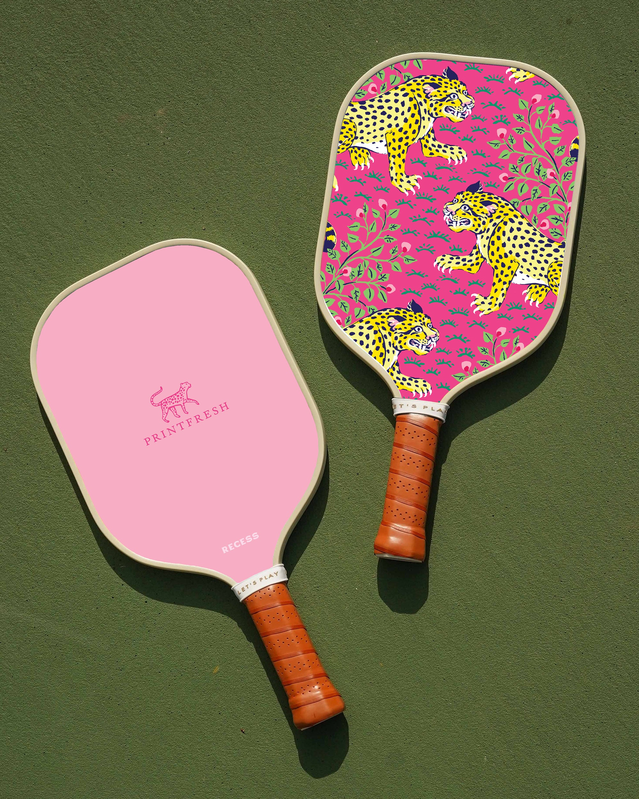

What is pickleball?
Pickleball is the ultimate adrenaline-charged fusion of skill, strategy, and pure exhilaration. It’s a sport that ignites energy and fuels camaraderie, played on a compact court that keeps the action fast, intense, and electrifying. With every sharp crack of the paddle meeting the ball, players are drawn into a thrilling dance of quick reflexes and clever tactics. Whether you’re leaping to smash a high lob or darting forward to dominate the net, pickleball is a full-body workout disguised as pure fun.
What sets pickleball apart?
What truly sets pickleball apart is its power to unite. It’s a sport that brings together people of all ages and fitness levels, creating a vibrant sense of community. Imagine a court where a 12-year-old novice takes on a seasoned competitor in their 60s, both grinning as they trade rapid volleys. The universal appeal of the game makes every match feel like a celebration of energy and connection, breaking down barriers and fostering spirited rivalries that leave everyone smiling.What does it feel like to play pickleball?
Pickleball’s pace is exhilarating but never overwhelming, striking the perfect balance between physical challenge and mental acuity. Players must anticipate their opponents' moves, react with precision, and strategize on the fly—all while keeping up with the dynamic flow of the game. The constant motion and split-second decisions create a rush that keeps your heart racing and your mind sharp. It’s a sport that rewards both raw athleticism and crafty ingenuity, offering something for every type of competitor.What will you experience while playing pickeball?
For anyone seeking an invigorating escape from the ordinary, pickleball delivers an unmatched thrill. It’s not just a game; it’s a lifestyle, a movement, and a revolution in how we approach recreation and competition. Step onto the court, and you’ll quickly see why this sport has captured hearts around the world—because once the first rally begins, there’s no turning back.What do you need?

Jump to Top